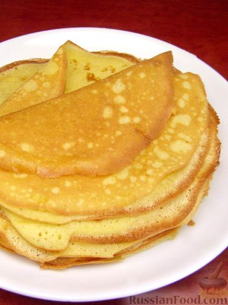

Рецепт блинов
Вернуться

- Яйца взбить с сахаром и солью
- Добавить растительное масло и перемешать
- Добавить молоко, хорошо перемешать
- Добавить соду и муку, перемешать венчиком или миксером
- Разогреть сковороду и намазать маслом
- Налить тесто в центр
- Перевернуть когда низ поджарится
- Пожарить блин со второй стороны
Поздравляю, теперь у вас есть блинчики!
Вы можете съесть их вместе с друзьями и семьей
Или в крысу, никому не сказав
Это типо очень вкусно, а вот американцы позавидуют у них такого нету!